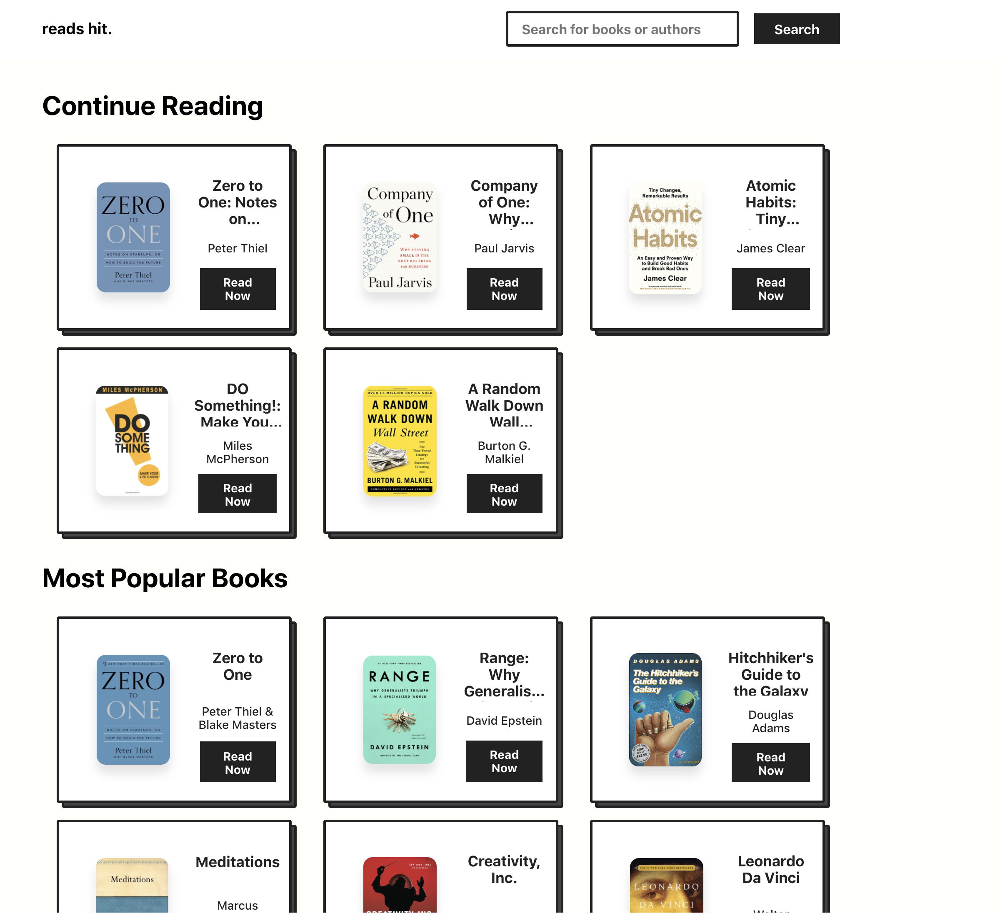
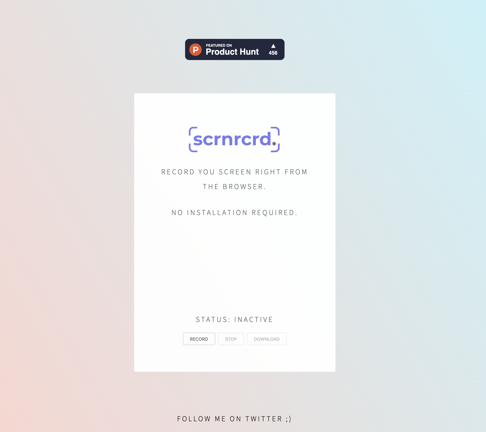
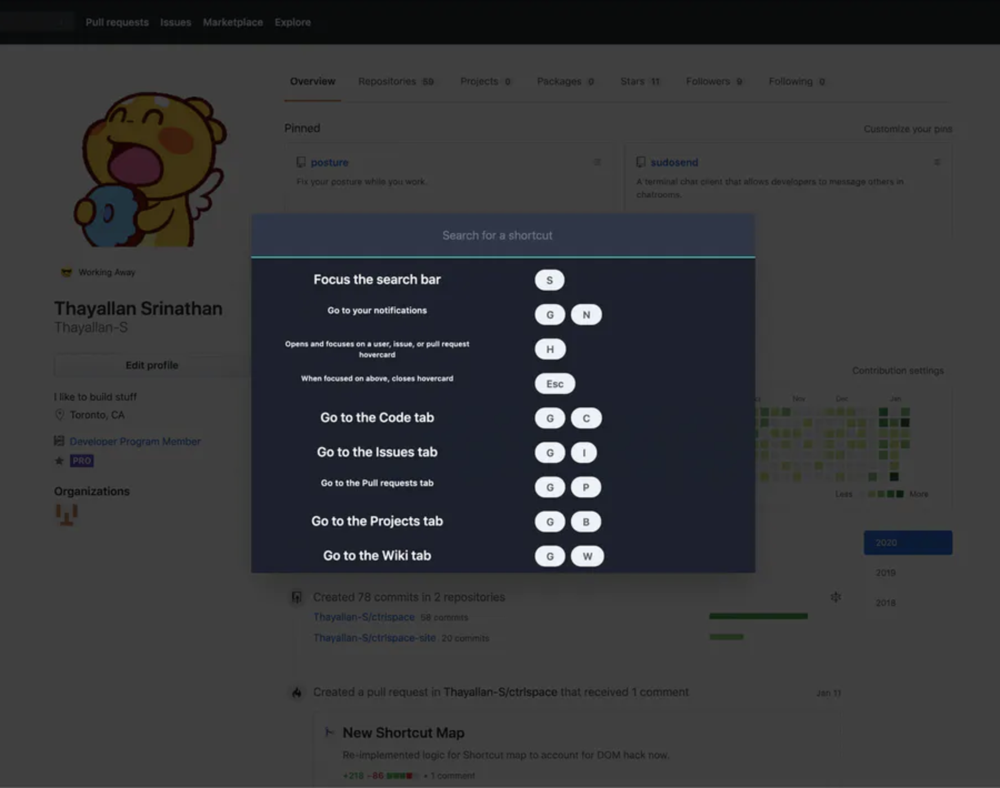
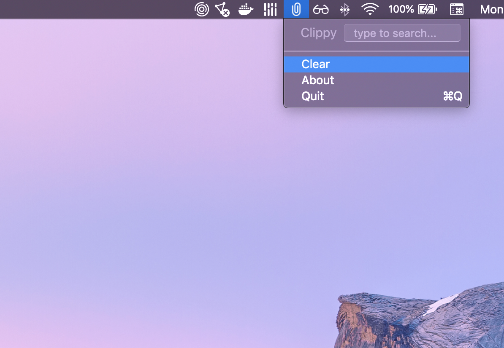

Napster for Books. A way for users to read any book in the browser for free. Got 150k+ users and was the top product on ProductHunt before it was taken down. It ended up pissing off a bunch of authors and publishers so we had to take it down. Check out the demo below.
Portfolio of Projects
-
 -
 Scrnrcrd ↗
Screen Recording for Free. A tool for users to record their screen without downloading any software. It blew up on ProductHunt and was the 3rd product of the day. I got over 40k users for the tool and received media attention including the blog post below by LifeHacker
-

Hotspot ↗
Internet over SMS. A method for people in developing countries to access the internet over cellular service. Worked on it with a couple friends and we were fortunate enough to win the CES Young Innovators to Watch Award in 2019 as well as a Not Impossible awardee. Check out the documentary we had filmed on us!
-
 Ctrlspace ↗
Spotlight search for Shortcuts. A tool to let users navigate their favourite websites faster. Ctrlspace lets you quickly find actions to perform on a webpage and let's you create sequences of multiple shortcuts to perform one after another. One of the winners at the YC November 2019 Hackathon (was called lipid). Check out the post below as well as a demo.
-
 ClippyApp ↗
Copy and paste multiple items. A Mac menubar app that lets you copy and paste multiple things at the same time. The product has over 300 downloads and tons of upvotes on ProductHunt. It was a mini project I built over a week to solve my problem of having to copy multiple snippets of code at the same time.
-

Autosection ↗
A pygame version of a AV intersection. This was a bit of a research project where I tried to see if I can program an extremely efficient intersection where cars would communicate with one another to go through it as smoothly as possible. I was inspired to build it after I saw a gif of something similar on reddit but learnt it was just an animation.
Other projects
(that didn't deserve a whole writeup)